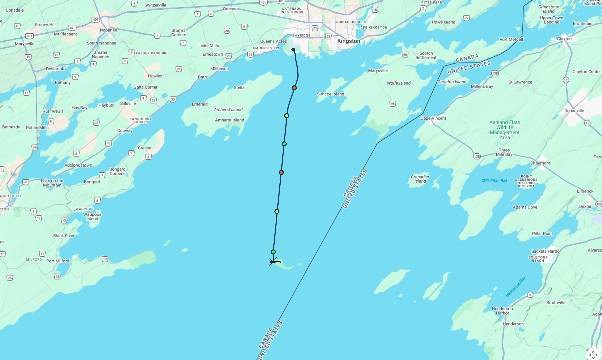

B:
Home
Flights
Events
Reports
Specifications
Operator Name
Welcome,
Username
Log Out
Flight #46309524
▾
—
0.25×
0.5×
1×
2×
4×
8×
—
—
⤾
—
—
Add module
×
Add module
Timeline
Add module to this window
Graphs
Add a graph
Tabular
Status
3D View
Pending WebGL · live preview
ALT AAL
—
IAS
—
VSI
—
HDG
—
PITCH
—
ROLL
—
Map

+
−
⤾
Pending map provider · live preview
Primary Flight Display
IAS · kt
—
ALT · ft
—
2
1
1
2
VSI · k·fpm
—
Engines
Eng 1
Eng 2
TRQ
—
—
N1
—
—
EGT
—
—
COL
—
Groundspeed
—
Phase
—
Save layout template
Give this arrangement a name so you can recall it later.
Name
Cancel
Save template